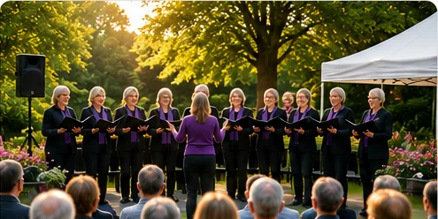

Spontaan zingt tijdens een sfeervolle zomeravond
Een avond vol muziek, ontmoeting en bekende nummers die het publiek enthousiast meezong.

Tijdens deze sfeervolle zomeravond bracht Zanggroep Spontaan een afwisselend programma met bekende en verrassende nummers.
Het publiek genoot zichtbaar en zong bij verschillende liedjes enthousiast mee. Het werd een avond vol muziek, plezier en ontmoeting.
Wij kijken met veel plezier terug op dit bijzondere optreden en danken iedereen die erbij was.